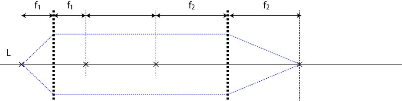

無限遠光学系の結像特性，倍率-01
無限遠光学系のメリットは説明していきましたが，
結像特性はどうなっているの？
に関しては触れていませんでした．
そもそも，結像とは，一般的に
焦点より遠い位置から発せられた光がレンズを通して像を結ぶ
ことでしたので，無限遠のような，
焦点の位置から発せられた光
がどうなるかはよくわかりませんね．
一般的に，無限遠光学系は，

のように描かれており（黒点線がレンズ），f1の焦点から発せられる光が，となりのレンズのf2の場所に集光することはよくわかります．
しかし，これだけでは，倍率などがわかりません．
また，結像するのなら，f1のどの位置の光も，f2の同じ平面に集光しなくてはなりません．
ここでは，上記の課題が満たされているかどうかを幾何光学で確認してみましょう．